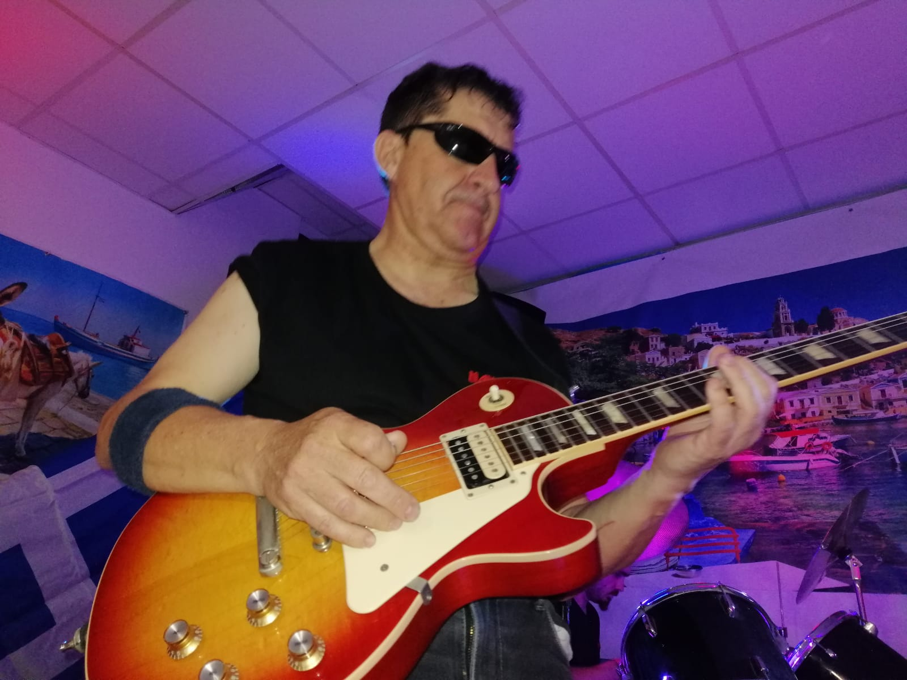
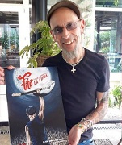

{kind=link}
{kind=link}
{kind=link}
{kind=link}
{kind=link}
{kind=link}
En español
- ACABO DE LLEGAR - Fito y fitipaldis
- BLACK IS BLACK - Los bravos
- CALLE SIN LUZ - Mclan
- CUANDO BRILLE EL SOL - La guardia
- CUÉNTAME - Formula V
- DÉJAME - Los secretos
- ÉCHAME A MI LA CULPA - Albert hammond
- EL LÍMITE - La frontera
- EL RITMO DEL GARAJE - Loquillo
- EL ROMPEOLAS - Loquillo
- ENTRE LA ESPADA Y LA PARED - Fito y fitipaldis
- FLAMENCO - Los brincos
- INSURRECIÓN - Manolo garcía y Miguel rios
- LA CHICA DE AYER - Nacha pop
- LOBO HOMBRE EN PARIS - La unión
- MAGGIE DESPIERTA - Mclan
- MEJOR - Los brincos
- MI GRAN NOCHE - Raphael
- MUCHO MEJOR (HACE CALOR) - Los rodriguez
- MUEVE TUS CADERAS - Burning
- NO PUEDO VIVIR SIN TÍ - Coque malla
- OJOS DE PERDIDA - Los secretos
- PRINCESA - Sabina
- SABADO POR LA NOCHE - Los rodriguez
- SOLA - Los brincos
- SOLO TÚ - Los módulos
- SOUVENIR - Mclan
- VOY A PASARMELO BIEN - Hombres G
Extranjeros
- ALINE - Christophe
- AMERICAN DREAM PLAN B - Tom petty
- BAILA MORENA - Zucchero
- CRAZY LITTLE THING CALLED LOVE - Queen
- EVERYBREATH YOU TAKE - Police
- HAPPY TOGETHER - The turtles
- HAVE YOU EVER SEEN THE RAIN - Smokie
- HER STRUT - Bob seger
- HOW LONG - Paul carrack
- I'M A BELIEVER - The monkies
- IT NEVER RAINS IN SOUTHERN CALIFORNIA - Albert hammond
- IT'S ALL OVER NOW - Robben ford
- JOHNNY B. GOODE - Chuck berry
- LONG TRAIN RUNNING - Doobie brothers
- LYIN'EYES - Eagles
- MARY JANE'S LAST DANCE - Tom petty
- NEVER BEEN TO SPAIN - Three dog night
- NIGHTS IN WHITE SATIN - Moody blues
- PROUD MARY - Creedence Clearwater Revival
- REACH OUT I`LL BE THERE - Four tops
- ROCKIN'IN THE FREE WORLD - Neil young
- RUN TO YOU - Bryan Adams
- SATISFACTION - The rolling stones
- SISTER GOLDEN HAIR - America
- STAND BY ME - John lennon
- STILLNES OF HEART - Lenny kravitz
- SUGAR BABY LOVE - The rubettes
- SUZIE Q - Creedence Clearwater Revival
- SWINGIN' - Tom petty
- TAKE IT EASY - Eagles
- TELL HIM - Vonda shepard
- THE ROAD TO HELL - Chris rea
- THESE BOOTS ARE MADE FOR WALKING - Nancy sinatra
- VENUS - Shocking blue
- WALK OF LIFE - Dire straits
- WHO'LL STOP THE RAIN - Creedence Clearwater Revival
- YELLOW RIVER - Christie
- YOU GOT IT - Roy orbison
- YOU NEVER CAN TALL - Chuck berry
- YOU WRECK ME - Tom petty

Puedes ponerte en contacto con nosotros llamando al 651511476 o haciendo click en el icono de Whatsapp
Fermín
¡Cómo se pueden tener tantos bajos!. Lo mismo se arranca y toca la batería.
Javito
Como toca el joio. Un día toca la bateria y otro se hace un maratón.
El gran Moli
Maestro del teclado. La cantidad de efectos que le puede sacar!

Ildefonso
Es el guitarra principal y técnico de sonido del grupo. La última adquisición.

Feria de fuengirola.
Tocaremos en la caseta de juventud todos los días desde las 10 de la noche
Leer más
Queen escribió la canción más alegre de la historia
Don't Stop Me Now lidera un listado de 10 canciones hecho por un doctor de la Universidad de Groningen
Leer más

'Fito y por supuesto la luna'
Así será la novela gráfica para celebrar el 25 aniversario de la banda. Este cuidado trabajo gráfico relata la vida y obra del legendario artista bilbaíno Fito Cabrales.
Leer másMuere Robbie Robertson, líder de The Band
El mundo de la música y el cine está de luto por la partida de Robbie Robertson, icónico guitarrista, compositor y cantante.
Leer másRingo Starr y la canción que marcó su carrera
Ringo Starr dio hace poco una entrevista donde comentó un dato curioso acerca de su carrera como Beatle y solista. “No hay nada como la primera”.
Leer más